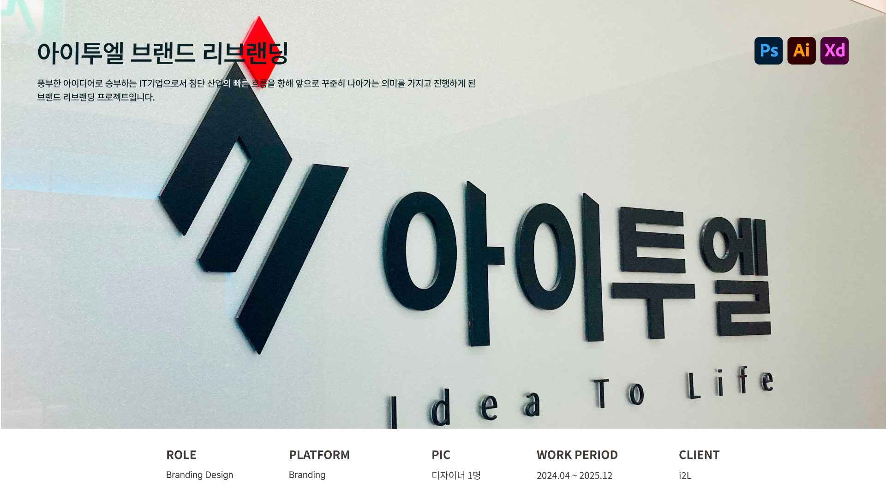

아이투엘 브랜드 리브랜딩

프로젝트 개요
프로젝트 목표
육해공을 아우르는 국방 프로젝트를 선두로 보안 및 자동화 ICT솔루션을 구축하는 IT기업의 이미지에 맞춰 누구에게나 신뢰를 제공할 수 있는 기업을 목표로 한다.
디자인 목표
디자인이 필요한 분야에 자사의 흔들리지 않는 비전과 아이덴티티가 넓은 세계를 향해 나아갈 수 있도록 공통된 시각적 시스템을 만들어 제공한다.
프로텍트 타입
새로운 분야로 사업을 확장, 진출을 하기 위해 기존의 이미지에서 새로운 변화를 전달하기 위한 기업 인식변화를 위한 리브랜딩
프로젝트 유형
Brand Repositioning, BI Renewal Design
담당업무
담당 범위
UI/UX 디자인 · 그래픽 디자인 · 클라이언트 소통 담당
제작 방향
기업이 새로운 사업을 확장해 나아가면서 추구하기 시작한 가치와 비즈니스의 성공적인 소통, 공통의 철학을 기업이미지를 전반에 담아내어 고객에게 일괄된 이미지를 전달할 수 있도록 기준점을 재정비하였습니다.
담당업무
로고 리디자인브랜드 명인 i,2,l을 심볼로 표현하여 첨단 산업을 향해 빛을 밝혀 나아가는 모습을 표현하여 디자인하였습니다.
명함 디자인브랜드 색상을 사용하여 심플하면서 브랜드의 주요 산업군과 아이덴티티를 한번에 알아볼 수 있도록 디자인하였습니다.
간판 디자인리뉴얼 된 로고를 사용하여 기업의 첫인상이 되는 간판 제작을 담당하여 발주까지 완료하였습니다.
브로슈어 디자인브랜드 색상과 첨단 산업 단지이미지, 선과 직각을 사용하여 IT산업의 속도감을 표현하여 디자인하였습니다.
홈페이지 리디자인 시안참여 프로젝트, 산업군에 맞춰 각각 서로 다른 3가지의 시안을 제공하여 사용자가 원하시는 시안을 선택할 수 있도록 디자인 하였습니다.
PPT 템플릿 디자인브랜드 색상과 반대되는 색상을 사용하여 이성적이면서 냉철하고 날렵한 느낌이 들 수 있도록 디자인 하였습니다.
제품 패키지 디자인심플하고 간결하면서도 해당 제품이 어떠한 상품을 나타내고 있는지 한눈에 파악할 수 있도록 하였습니다.
품질보증서 디자인해당 제품의 품질을 보증한다는 증서로서 신뢰감과 제품 품질에 대한 전문성이 느껴질 수 있도록 디자인 하였습니다.
그 외 다수의 자사 콘텐츠 디자인 작업 진행
*본 프로젝트는 NDA(비밀유지 계약) 및 기업 보안 정책을 준수하기 위해 제작 일부 제작물은 공개가 불가능합니다.
해당 클라이언트에 저작권이 귀속되어있으며, 기업 제출 목적으로만 사용됩니다.
AI학습·무단 전재·복제 및 외부 배포를 금합니다.


© 2026 Leesujin. All rights reserved.